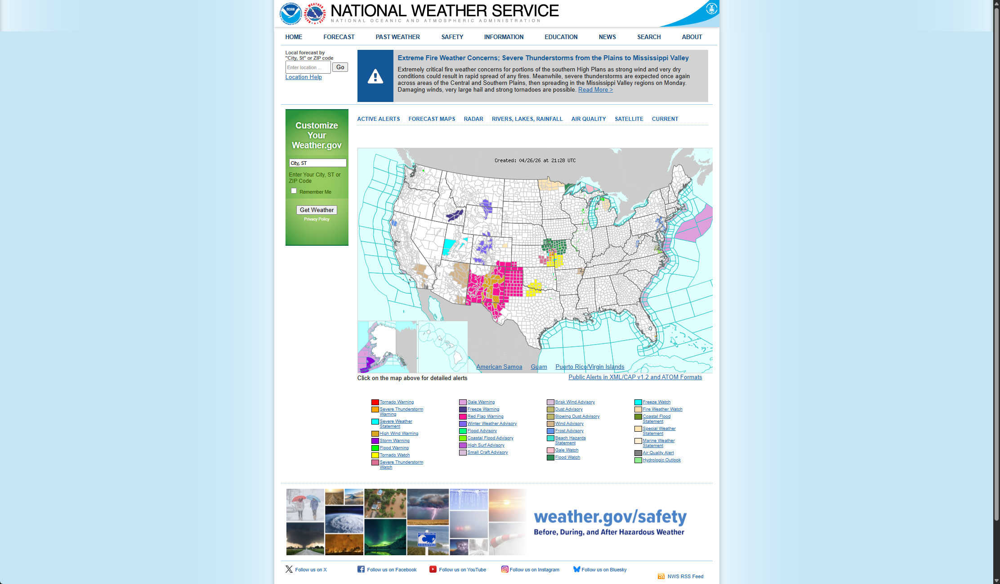
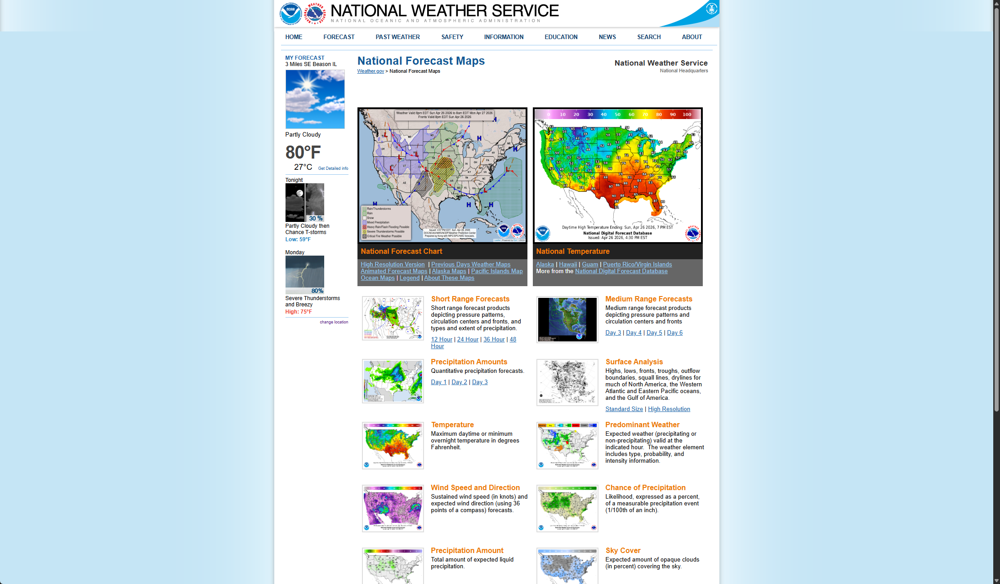
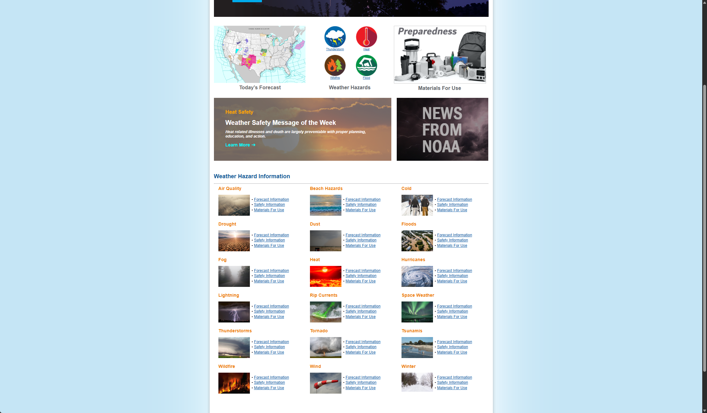

Why does the most authoritative weather source in the U.S. feel so hard to use — and what would a better version look like?
Weather.gov is the official website of the U.S. National Weather Service, run by NOAA. It covers forecasts, alerts, radar, and climate data for the whole country — no ads, no paywalls. Services like Weather.com pull from NWS data, so in a way Weather.gov is the source behind a lot of what those apps show. Despite that, using the site directly is often a frustrating experience, and it has a reputation as one of the more confusing government websites around.
I picked Weather.gov because the gap between what it does and how it works is surprisingly large. It has the most authoritative weather data in the country, but the interface makes it hard to find even basic things like this weekend's forecast or an active storm warning. For a site that people often check during severe weather events, that's a real problem — not just an inconvenience.
The site has a lot of sections, so I focused specifically on the local forecast lookup — what happens when you search for a place and try to read the results:
Screenshots taken from the live site. Each one shows a different part of the interface that I found confusing when I first used it.

There are actually two search bars on this page — a small one at the top-left corner and a bigger one in the green sidebar. Neither is clearly labeled as the main one to use. The map takes up most of the screen, but to get local weather you have to click on a county, which most people don't know offhand. The colored zones on the map show alert areas, but the legend for what each color means is all the way at the bottom of the page.

Once you click into the forecast maps section, you get a wall of options — short range, medium range, precipitation amounts, surface analysis, and more. Each category then has its own sub-links (12 Hour, 24 Hour, 36 Hour, 48 Hour). There's no indication of which map a regular person should look at, and the labels use terms most people wouldn't recognize without a meteorology background.

The safety page lists every possible weather hazard type in one alphabetical grid — from Air Quality to Winter Weather. They all look identical, with no visual difference based on how common or severe they are. If you're trying to find tornado information quickly, you have to scan through the whole list to find it. There's no way to tell at a glance which ones are actually relevant right now.
Applied without user testing, based on direct interaction with the live site.
The timestamp showing when the forecast was last updated is buried at the bottom of the page. When I was using the site, I had no idea if the data was current or hours old.
Heavy use of meteorological jargon throughout: QPF, PWAT, SPC Outlooks, ASOS. None of it is explained inline — it feels like the site was built for meteorologists, not regular people.
Back navigation works, but changing locations mid-flow is awkward — users must scroll back to the top or return to the homepage rather than editing in place.
The forecast page, the radar viewer, and the climate data section all look completely different from each other — different fonts, layouts, colors. It doesn't feel like one website.
Location search can silently return the wrong city when names are ambiguous. It doesn't ask which one you meant — you can end up reading the wrong forecast and not realize it until much later.
Map color codes have no persistent legend on screen. Icon meanings are not labeled. You have to remember what each thing means every time you come back.
No way to save a location, no shortcuts, nothing carries over between visits. If you use the site every day, it still treats you like a first-time visitor — there's no memory of where you've been or what you usually look for.
The forecast results page packs in tables, text blocks, a live map, links, and technical data all in one column. There's no clear sense of what's most important — everything is just stacked on top of each other.
When a search fails, you get a generic error page with no help — it doesn't suggest trying a ZIP code, and there are no alternative results shown nearby.
The site has a glossary somewhere, but you have to go hunt for it. Nothing on the forecast page explains what the terms mean in context — you're just expected to already know.
The page loads with a big map, two search bars, and a row of navigation links across the top. It's not obvious where to start. The main search bar is in the green sidebar on the left — easy to miss if you're looking for a search bar in the top-right like most websites have.
Typing works, but there's almost no autocomplete help. When you hit Enter, the site picks a result without asking you to confirm — so if it guesses the wrong county, you won't know until you're already looking at the wrong forecast.
The results page is a lot. The same forecast appears twice — once as a graphic with icons and temperatures, then again as full paragraphs of text below. There's also a map, a list of 15+ extra links, coordinates, and a satellite image, all stacked in one column.
The 7-day graphic doesn't highlight weekends at all — Saturday looks the same as Wednesday. To find it you have to count the days from today, which is an easy thing to mess up if you're in a hurry.
Comparing Weather.gov with two other weather sites that cover the same ground for everyday users.
| Criterion | Weather.gov | Weather.com (TWC) | AccuWeather.com |
|---|---|---|---|
| Data Authority | Official U.S. government source | NWS data + proprietary model | Proprietary forecast model |
| Location Search | Minimal autocomplete, silent ambiguity errors | Robust autocomplete, instant results | Autocomplete with state/country labels |
| Information Hierarchy | Everything at once — no clear order | Today → Hourly → 10-Day progression | Card-based, progressive disclosure |
| Visual Design | No consistent design system, appears dated | Modern, branded, consistent | Clean, icon-rich, color-coded |
| Severe Weather Alerts | Authoritative and detailed, but hard to find — buried rather than surfaced | Present but less detailed | Good visual treatment |
| Mobile Experience | Tables break, text overflows on phones | Fully responsive + native app | Fully responsive + native app |
| Use of Jargon | Heavy jargon, no inline glossary | Plain language throughout | Plain language with optional expert view |
| Advertisements | None | Heavy advertising | Moderate advertising |
What stood out most: Weather.gov is the official government source, and Weather.com at least partly draws from NWS data — AccuWeather runs its own model. But for the average person checking the weekend forecast, the data quality differences don't really matter. What matters is that both Weather.com and AccuWeather are much easier to use. The gap isn't in what the site has — it's that everything gets dumped on screen at once with no sense of what to look at first.
I asked my roommate to try using Weather.gov while I watched. He uses weather apps on his phone regularly but had never been to Weather.gov before. I asked him to talk through what he was thinking as he went, and I took notes on where he got stuck, what he clicked, and anything he said. The whole thing took about 15 minutes.
Find what the weather will be like this Saturday in Champaign, Illinois.
Check if there are any severe weather warnings in the area right now.
Find the hourly weather forecast for tomorrow.
After watching my roommate use the site, the clearest problem was that he had a simple question but the page gave him everything at once. So the main idea behind the redesign is: show the answer to what most people are probably looking for first, and let them go deeper if they want to.
I drew out three rough zones on paper: current conditions, a 7-day view, and deeper detail. That made me realize the main issue — the current site doesn't have zones at all. Everything just runs together down one long column.
I moved away from tables and tried a card-based layout with navigation tabs. The first question that came up was where to put severe weather alerts — in a sidebar, or interrupting the main content? A sidebar didn't work on mobile, so that idea got cut quickly.
I ended up putting alerts in a full-width red banner at the very top, only shown when there's actually an active alert. That felt right because it matches how emergency alerts already work in other contexts (think AMBER alerts, weather radio).
After watching my roommate use the site, I added the weekend highlight and replaced the hourly table with a horizontal scroll strip — which is what most weather apps use and feels a lot more natural on a phone. I also wrote down the idea for a location confirmation step to catch wrong-city errors, but turning that into an actual screen happened in the final version rather than at this stage.
Identified as a problem at this stage: the homepage has two ambiguous search bars and a county-click map. The fix — one autocomplete bar with a confirmation step — was written down but not yet built into a screen. That screen came in the final version.
Current conditions sidebar + 7-day strip with weekends highlighted in purple. Sticky left nav: Today · Hourly · 7-Day · Radar · Alerts.
Full-width red banner always visible when active alerts exist. One-click to expand full warning text.
Replaces the dense table with a scrollable horizontal strip: icon + temp + precipitation %. Swipe-friendly on mobile.
Each change in the redesign traces back to something specific from the interface analysis (4B) or user research (4C). Here's the direct connection:
| What I Found | Source | What I Changed |
|---|---|---|
| Easy to end up on the wrong city — ambiguous search and a county map that's easy to misclick | 4B — Heuristic #5 (Error Prevention) + 4C User Research | Added location confirmation step before forecast loads |
| "Get Detailed Info" link looks like body text — roommate almost missed it | 4C — User Research | Action links styled as distinct buttons, not inline text |
| Same forecast shown twice (graphic + text paragraphs) | 4C — User Research ("Why is it listed twice?") | Graphic view shown by default; text version available on demand |
| Developer links (KML, XML) shown to all users — confusing | 4B — Heuristic #8 (Minimalist Design) + 4C | Developer tools hidden by default, moved to collapsed section |
| Hourly forecast buried at bottom as a plain text link | 4B — Heuristic #6 (Recognition over Recall) + 4C | Hourly moved to persistent left nav — always one click away |
| No way to tell Saturday from Wednesday in 7-day view | 4B — Cognitive Walkthrough (Step 4) | Weekend days highlighted with a different background color |
| Severe weather alerts not visible without scrolling — my roommate struggled to find the alerts link in Task 2 | 4B — Heuristic #1 (Visibility of System Status) + 4C User Research | Full-width alert banner pinned at top of page when active |
| No timestamp showing when forecast was last updated | 4B — Heuristic #1 (Visibility of System Status) | Update time shown in location card, visible without scrolling |
When I look at how people actually use Weather.gov, most of them just want to know two or three things: what's the weather now, what's it going to be this weekend, and is there anything dangerous coming. The current site doesn't really prioritize any of that — everything gets equal space on the page regardless of whether it's something a regular person cares about or a data export link for developers.
My redesign tries to answer those common questions first, and push things like technical charts and raw data links out of the default view. I didn't want to delete anything — just stop treating a KML export link as equally important as Saturday's temperature.
The original Weather.gov homepage vs. the redesigned forecast page — the same starting point and destination, handled very differently.
The 4D draft focused on the forecast page. Between the draft and this final version, two things were added based on reflection:
The 4D prototype showed the restructured forecast page: card layout, alert banner, hourly strip, weekend highlight. The search flow was described in text but not yet mocked up. The draft proved the layout concept worked, but the entry point to the site was still unresolved.
After reflecting on the user research — where my roommate clicked the wrong county on the map and ended up on Lincoln, IL's forecast without realizing it — I realized the entry point to the site needed its own redesign, not just the results page. The final version adds an autocomplete search and a location confirmation step as Screen 1, before the forecast page even appears.
Looking back at the draft, I realized I'd written down a bunch of design decisions without clearly saying where they came from. So for the final version I went back and matched each change to the specific heuristic or user research moment that motivated it. That process also surfaced one thing I'd missed: the "Get Detailed Info" link being invisible had come up during user research but never made it into the mockup. I went back and added distinct button styling for it in the final version.
Two screens: the search flow and the forecast page. These two cover the main problems that came up during analysis and user research.
Left: autocomplete that shows city, state, and county together, so you can tell apart places with the same name before clicking. Right: a confirmation step before the forecast loads. During user research, my roommate navigated to Lincoln, IL's forecast page when he was trying to get to Champaign — the county-click map on the homepage is easy to misclick. This confirmation step would catch that kind of mismatch before the forecast even loads.
Restructured forecast page with a persistent alert banner, current conditions sidebar, left navigation, horizontal hourly strip, and a 7-day view that highlights weekends in purple. Developer links (KML, XML, tabular data) have been removed from the main view entirely.